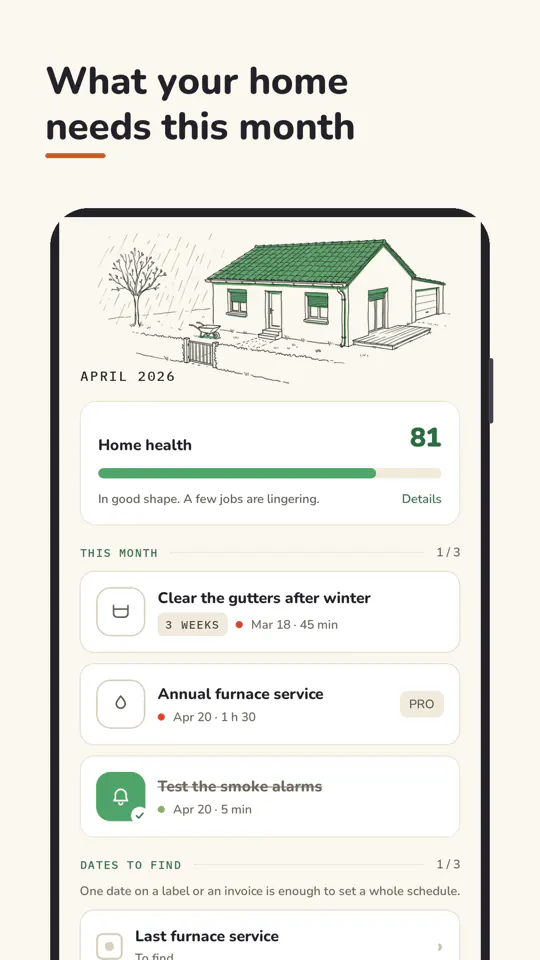
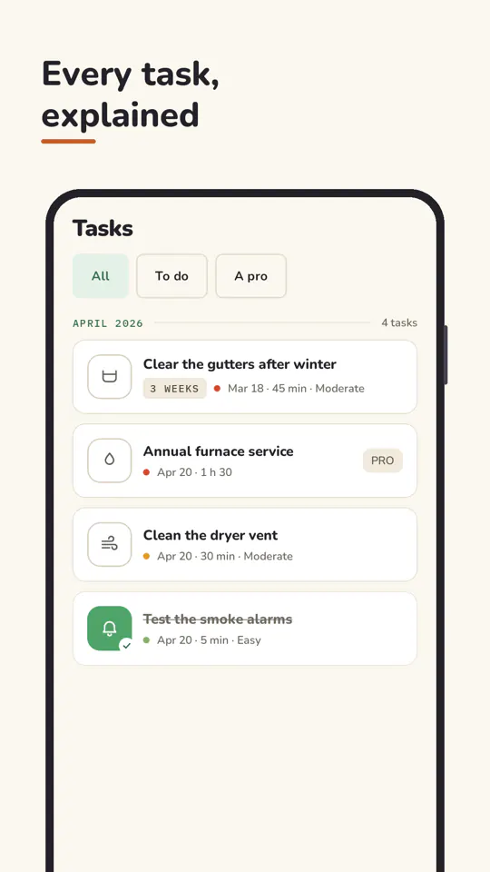
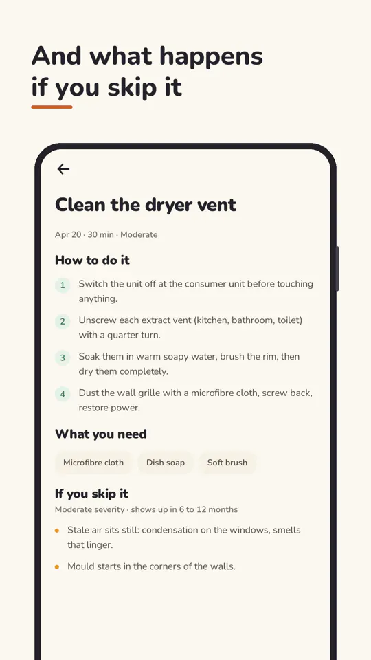
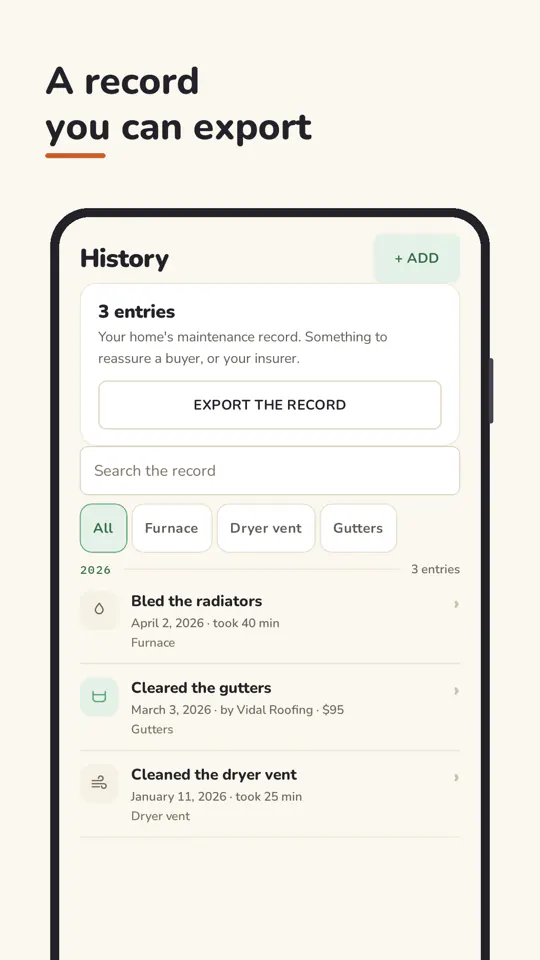
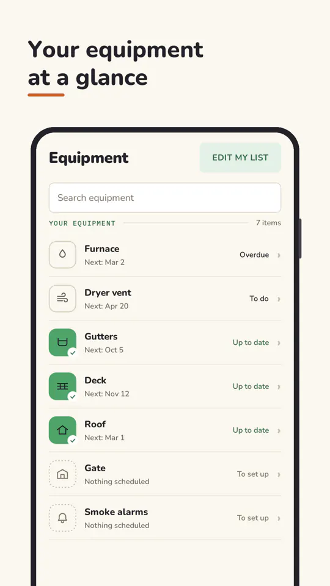
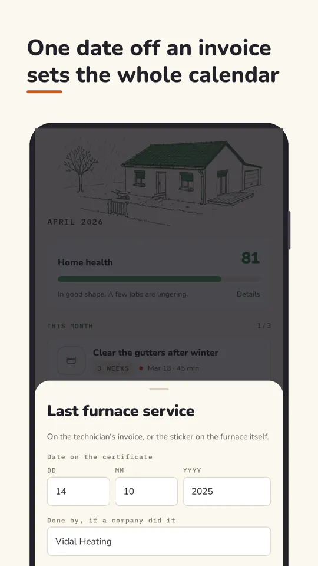
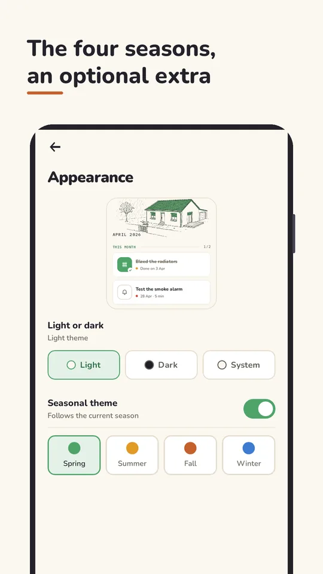

What it changes
-
Nothing to remember
Almanac knows the intervals; you open the app when it asks.
-
Real instructions
Every task lists the steps, the tools, how long it takes, and what happens if you put it off.
-
A maintenance record you can export as a PDF
Something to reassure a buyer, an insurer, or yourself in three years.
-
A home health score
So you can see where you stand at a glance.
How it works
You add what you have: furnace, water heater, smoke alarms, gutters.
Almanac builds your schedule and tells you when something is due.
Every task you tick lands in the record, which you export when you need it.
Screenshots







Your data
There is no Almanac server, no account, no sign-up, and the app's own code makes no network calls. Your record stays on your phone, with one exception: Android's automatic backup keeps an encrypted copy in your Google account so that you still have it if you change devices. You can turn it off.
There is no analytics, no advertising tracker and no crash-reporting tool in this app.
The permissions it asks for
- Notifications: due-date reminders. Deny it and the app works, without reminders.
- Boot completed: rescheduling your reminders after a restart, which would otherwise lose them.
- Internet, network state: contributed by the Google Play libraries (donations, reviews), not by Almanac's own code.
What costs money
Every maintenance sheet and reminder stays free. The Seasons option, one purchase, once, adds all four seasons: their colors and their illustrations. You can donate if the app is useful to you; the payment is handled by Google Play, not by Almanac.
Questions
Does Almanac replace required inspections?
No. Almanac helps you keep up with routine maintenance. It does not replace required inspections or a professional's judgment: check what applies to your home.
What happens if I change phones?
Reinstalling Almanac gives you back your equipment and your record: that is Android's backup, which keeps an encrypted copy in your Google account. You can turn it off in Android's settings, for the whole device or for Almanac alone.
A task comes round too often?
You can mute it, for a few months or for good: it leaves the list without counting as done, and your score counts it neither for nor against. A task muted until a date comes back on its own on the day.
Can I write down what was done before Almanac?
Yes. A chimney sweep, a furnace service, an invoice you found: add it to the record, and it counts towards your home's record.
Does Almanac work offline?
Yes. The app's own code makes no network calls: the sheets, the schedule and the record are on the phone. Only donations and reviews go through Google Play.